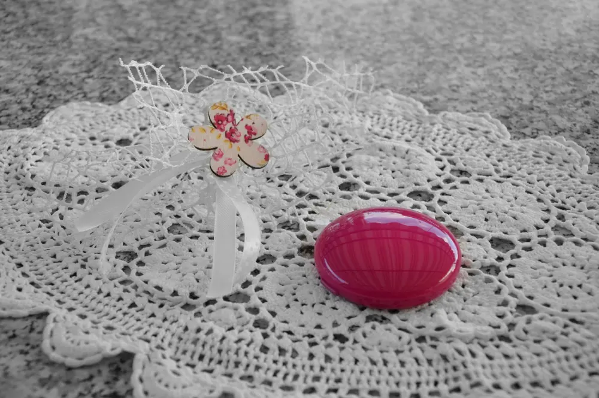
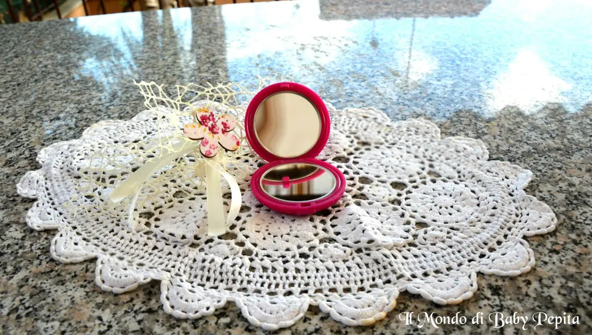
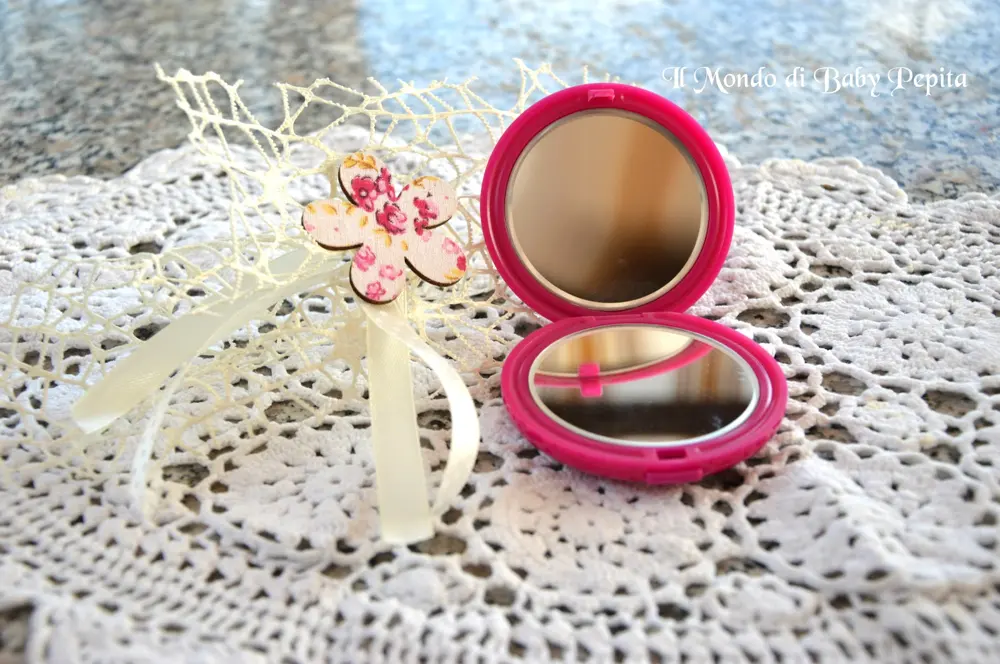
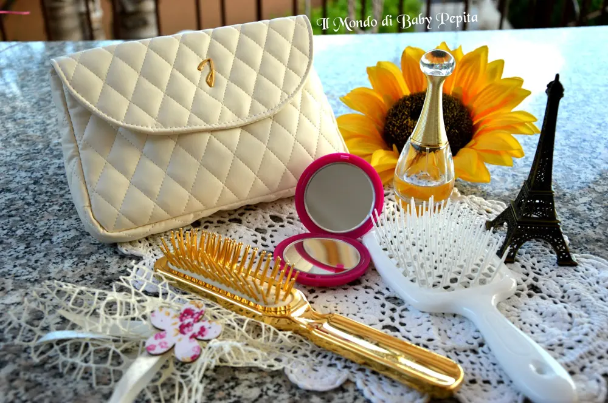

Janeke delle mie brame
 Janeke delle mie brame, chi è la più bella del reame? Ed è così che oggi inizio quest'articolo :D
Janeke delle mie brame, chi è la più bella del reame? Ed è così che oggi inizio quest'articolo :D
Siamo tutte un pò vanitose e diciamolo, ogni qualvolta che ci troviamo un specchio davanti non resistiamo a darci un'occhiata e una sistematina. .
Avere con sè un piccolo specchietto è sempre utile, come in questo caso che vi mostro uno specchio davvero carino ed utile da borsetta. .

- Colore fucsia, quindi molto fashion e alla moda. . specchietto 82402 - FUX (disponibile anche in altre 5 colorazioni)
- Materiale in plastica dura
Si apre con uno scatto et voilà . .
Appena lo apriamo noteremo due specchietti a tutto tondo uno che da la possibilità di specchiarci normalmente e l'altro invece che ingrandisce, che può essere utile per essere sempre perfette.

Pratico 100 % sia per lo scatto semplice che per la grandezza che è adatto sia per pochette, borse e beauty case. .La qualità anche dello specchio in sè per sè è buona in quanto non deforma il viso ma rispecchia i nostri lineamenti senza alterare ne colore ne forma (come è possibile notare in alcuni specchietti da borsetta così piccoli)
Prezzo: 15,00 €

Ma cos'è Janeke? che marchio è?
Janeke 1830 si occupa degli accessori di cosmesi con una grande varietà di prodotto.
Assolutamente made in Italy ha accostato l'artigianato alla creatività, fatti a mano, uno per uno soddisfando un ampio raggio di clientela.

Vi lascio il loro sito web: http://janeke.it/azienda/FACEBOOK: https://www.facebook.com/janeke1830/E NOI CI LEGGIAMO AL PROSSIMO ARTICOLO